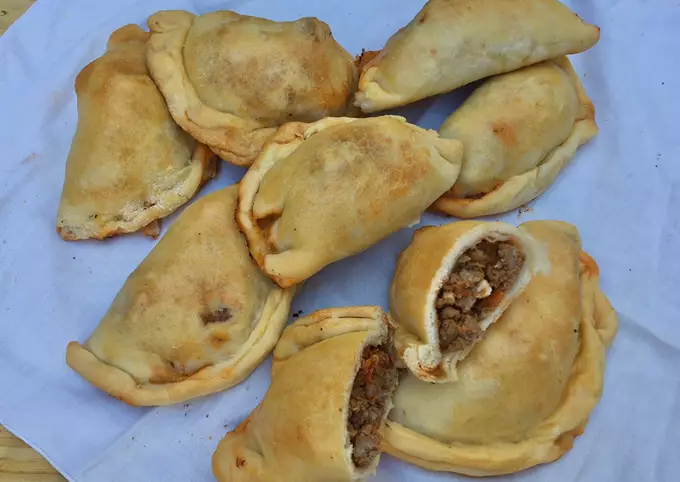

- Ingredientes:
- 25 raciones
- Relleno
- 1 cebolla
- 1 morrón/li>
- 1 kg carne picada (magra)
- C/n condimentos varios (sal/pimienta/ajo en polvo/pimentón dulce/orégano)
- Chorro salsa de tomate
- 6 huevos
- C/n aceitunas fileteadas
- Masa
- 24 cdas aceite
- 24 cdas agua
- 2 huevos
- 1 cda polvo de hornear
- C/n sal
- C/n harina 0000 (750 gr. aprox)
- Opcional
- 1 huevo batido o leche para pincelar
- RELLENO: cortar el morrón y la cebolla en cubos pequeños.
- En una sartén o wok con aceite caliente, cocinamos las verduras.
- Un poco antes que las verduras queden hechas, añaden la carne junto a los condimentos que más les guste (sal/pimienta/ajo en polvo/pimentón dulce/orégano). Mezclamos todo.
- Cuando la carne esté sellada pero todavía cruda, agregamos un chorro de salsa de tomate que le brindará esa jugosidad.
- Tapamos la sartén o el wok durante media hora aprox. para dejar que la carne se cocine y largue jugo, y que la salsa hierva, revolviendo en algunas ocasiones.
- Una vez que pasó el tiempo y la mayoría de los líquidos evaporaron, apagamos el fuego. Dejamos entibiar.
- Una vez que la carne esté tibia, agregamos las aceitunas fileteadas y los huevos duros cortados.
- MASA: les dejo el link de mi receta para que puedan hacerla: (Ver receta)
- Con harina en la mesada y la ayuda de un palote, estiran la masa fina.
- Con un cortante o recipiente redondo grande, cortan la forma redonda de la tapa de empanada.
- Agregan 1 cda del relleno en el medio, doblan a la mitad (pueden mojar los bordes de la circunferencia para que ambas mitades se peguen bien) y hacen el repulgue. No tienen que quedar perfectas!! Con que queden ricas alcanza.
- Las colocan a todas sobre una asadera y pueden pincelarlas con leche o huevo batido.
- Mandan al horno a 180 grados durante 30 minutos aprox., o hasta que la masa quede hecha y dorada.
- Disfrutar! Espero sus fotos de cuando las hagan.